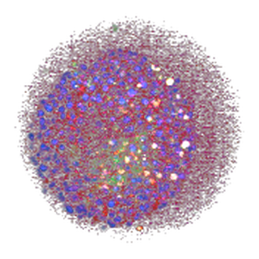

Research resources · Venous organoids
PIK3CA-mutant
venous organoids.
Choose a collection to explore the HGF work and its quantitative analysis, or watch long-term live-cell imaging.

Supplementary material
Explore the work
These two addresses are permanent and can be used independently in QR codes.